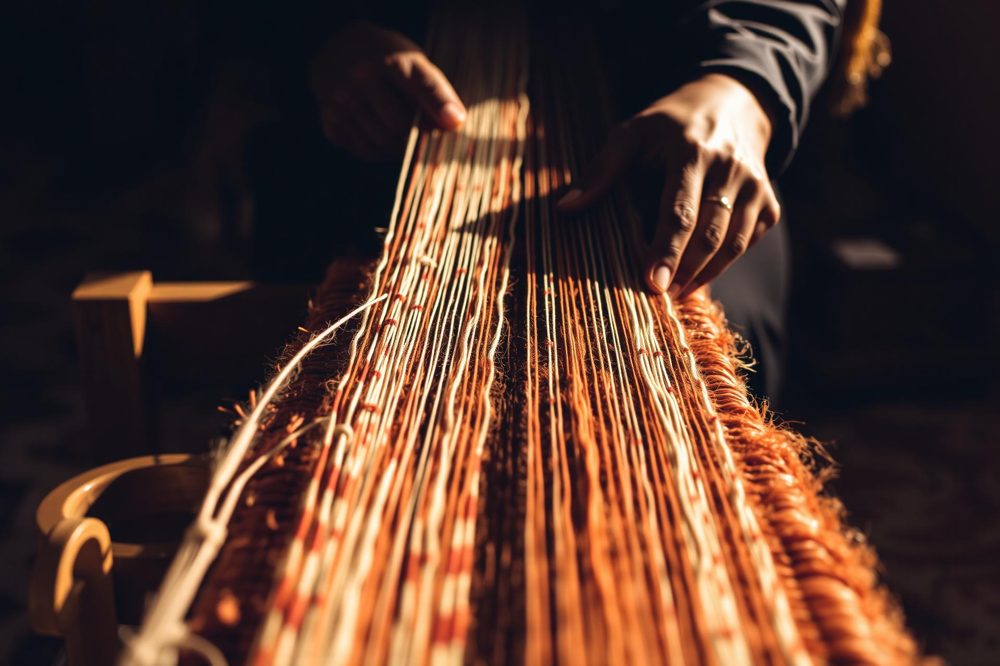
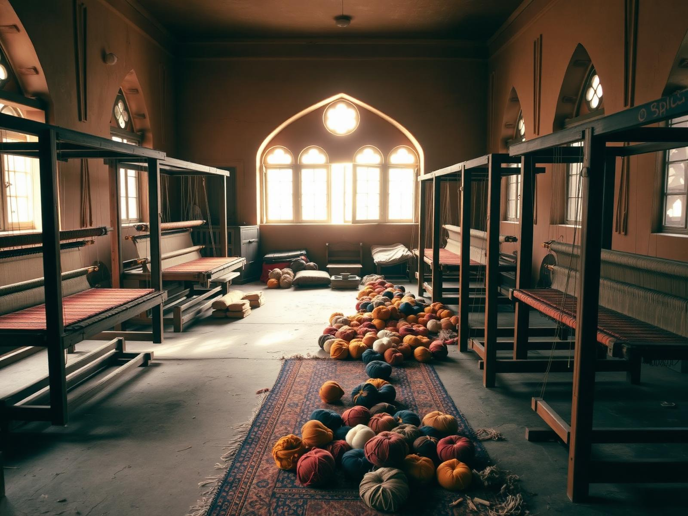
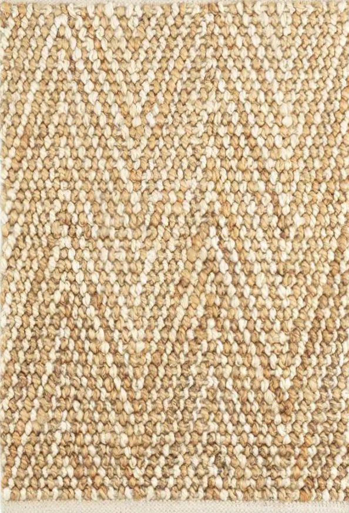
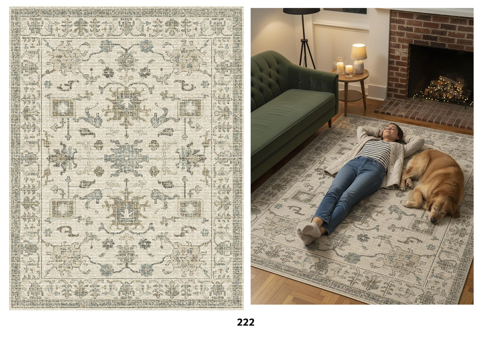
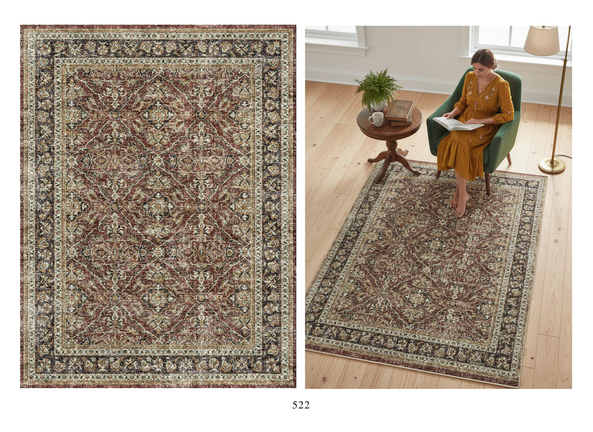
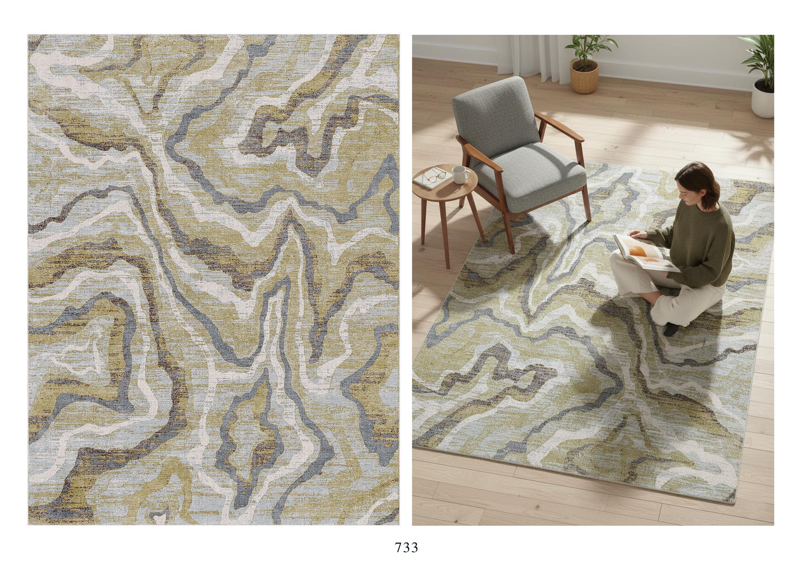

Est. in the Pink City
Weaves Of Jaipur is a young atelier carrying forward an old craft — pile by pile, knot by knot — for floors that feel like home.

About us
Weaves Of Jaipur began as a small idea: that a rug shouldn't just decorate a room — it should hold the memory of the hands that made it. We work directly with master weavers across Rajasthan, sourcing wool, cotton and natural dyes from villages we know by name.
As a young startup, we keep things small on purpose. Every piece is woven to order, inspected on the loom, and shipped from our atelier with the weaver's signature. No middlemen, no warehouses — just a slower, fairer way to make beautiful floors.
Collection 01
Hand-knotted in pure wool and viscose on traditional looms. From restrained moderns to faded classics — each piece takes months, not minutes.




Sourced from Bikaner; spun and dyed in small batches with natural pigments.
Any size, any shape. Tell us your room and we'll set the loom.
A well-made hand-knotted rug only gets more beautiful with decades of use.
Behind the craft
Step up to the loom with our artisans — a close, unedited look at the knots, the rhythm and the patience behind every piece. Tap any clip to play.
Collection 02
Flat-woven on pit looms in handspun cotton, our dhurries are the everyday companion to the handmade rug — washable, reversible, and quietly graphic. They started as the floor coverings of Rajasthani homes and still carry that ease.
Stripe
Indigo · Madder
Diamond
Ochre · Cream
Solid
Natural · Earth
The catalogue
Browse the full archive of designs currently on offer. Tap any piece and enquire — we'll send sizing, pricing and material details by return.
Kind words
A young house earns trust slowly. Here's what early clients — homeowners and interior designers alike — have said after living with their piece.
“Our 9×12 wool rug arrived three months after we placed the order, and it was worth every day. The colours are richer than the swatches and the weave feels impossibly dense underfoot.”
Anjali R.
Bengaluru, IN
Hand-knotted wool · 9×12 ft
“As an interior designer I've worked with most of the big houses. Weaves Of Jaipur sits in a different league — direct from the loom, honest pricing, and they actually answer the phone.”
Marcus Hale
Brooklyn, NY
Trade client · Custom runner
“I sent a photo of an old Persian I'd inherited and asked if they could reinterpret it. What came back was its own thing — modern, faded, beautiful. It's the heart of our living room now.”
Sofia M.
Lisbon, PT
Custom hand-knotted · 8×10 ft
“The cotton dhurries are my staple for summer. Light, washable, graphic in the best way. I've now ordered four in different palettes for the kids' rooms and the kitchen.”
Priya S.
Mumbai, IN
Cotton dhurrie · 6×9 ft
Make an enquiry
Custom sizes, dye samples, trade discounts, shipping anywhere — drop a note and a human from the atelier will reply within two working days.